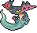
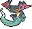

2020年1月28日
【ガラル☆ルーキーズ】ジュラルサン(最終918位)
(チャー研MADみたいな名前の構築になってしまった…)
概要
2020年の1/24～1/27に開催されたガラル☆ルーキーズにて、最終918位、レート1669を記録した構築です。元々ジュラルドン+イエッサンを使っていて残りのポケモンで悩んでいたとき、仲間大会で出会ったアーマーガアとヒヒダルマが非常に強そうだったので使ったところ、非常に噛み合ったのでそのまま使う事にしました。
個別解説
| ジュラルドン | |
| すじがねいり | とつげきチョッキ |
| 177(252)-100-135-169(228)-70-109(28) | |
| りゅうせいぐん | ラスターカノン |
| 10まんボルト | バークアウト |
| H:ジュラルドンミラーで ワンパンされないようガッツリ振る |
|
| C:ちゃんと振らないと とどめの時足りない |
|
| S:ジュラルドンミラーで 抜けるようちょっと振る |
|
その他の技は一致技+アーマーガアに弱くならない10まんボルト。ドラゴン技はりゅうせいぐんをチョイスしましたが外しやこれまた置物になりやすい点でりゅうのはどうにすべきだった気もします。
すばやさはそこまで振られないだろうとこの程度にしたのですが割と相手のジュラルドンに抜かれる事が多くもっとすばやさに振るべきだったと後悔しています。
| イエッサン | |
| サイコメイカー | きあいのタスキ |
| 145-54-86(4)-147(252)-125-150(252) | |
| マジカルフレイム | このゆびとまれ |
| てだすけ | まもる |
| C:どうせタスキなので なるだけ相手を削れるようにする |
|
| S:どうせタスキなので なるだけ相手を抜けるようにする |
|
そしてオーロンゲのふいうちやトリック、でんじはを封殺できるサイコメイカーを持っている、筈なのですが…
| アーマーガア | |
| ミラーアーマー | サイコシード |
| 205(252)-107-172(252)-52-106(4)-87 | |
| アイアンヘッド | ボディプレス |
| てっぺき | はねやすめ |
| B:詰めとボディプレス用 | |
特殊ポケモンにも火力デフレの関係で詰めやすさが比較的上がっていた、のですが…
| ヒヒダルマ(ガラル) | |
| ごりむちゅう | こだわりスカーフ |
| 181(4)-192(252)-75-31-75-161(252) | |
| つららおとし | フレアドライブ |
| かわらわり | じしん |
| ミラー含めて倒せるポケモンを多くするためぶっぱ | |
じしんは、浮いてるポケモンがほぼいないこの環境での範囲技としても、ジュラルドンへの打点としても強力。自分のジュラルドンはまもるを持ってないので、ジュラルドンをダイスチルさせて耐久を上げてじしんを無理やり耐えたりなんかもしました。
かわらわりはリフレクター貼ったときのばかぢからとほぼ同じ火力だったので採用しましたがそんな場面はなかったので普通にばかぢからで良かった気もします。
| オーロンゲ | |
| いたずらごころ | だっしゅつボタン |
| 191(164)-189(252)-97(92)-90-95-161 | |
| ねこだまし | ソウルクラッシュ |
| リフレクター | トリック |
| 総耐久が高くなる振り方で一番防御が高くなるもの | |
| A:ぶっぱ | |
攻撃に振っているのはふいうちを持っていた時の名残。相手のセキタンザンが思ったより速く、オーロンゲミラーで先制できるようにするために攻撃ではなく素早さに振るべきでした。
| ブリムオン | |
| マジックミラー | リリバのみ |
| 164(252)-95-116(4)-206(252)-123-30 | |
| サイコキネシス | マジカルシャイン |
| ふういん | トリックルーム |
| とりあえずぶっぱ | |
…が、実際は全く会わなかったので殆ど選出しませんでした。一応後続がヒヒダルマだとキツそうな場合に選出して、「ヒヒダルマじゃなくてまあ良かったかな…」と思う程度の活躍はしました。
選出
ジュラルドンとイエッサンを初手に選出。
ジュラルドンの特攻を下げた後アーマーガアに替えててっぺきを積み、相手を消耗させてヒヒダルマで〆。
 
オーロンゲとヒヒダルマを選出。
隣がドラパルトの場合はセキタンザンにトリック。
隣がアクアジェットを覚えるポケモンの場合はねこだまし+ダイアースでアクアジェット役を倒しセキタンザンを放置。
パーティを見ていけそうならアーマーガアとヒヒダルマを選出。
ヒヒダルマのダイアースでアーマーガアの特防を上げて無理矢理詰める(アドリブでやった)。
無理そうだったらブリムオンを選出する(こっちはやらなかった)。
反省点
総括
100位以内を目標としてたので散々な結果だったのですが、今までこのタイプの大会で1600以上に行ったことは無くある程度成長を実感する形となったので良かったとも言えます。大会に限らずどこかのタイミングもっといい結果を残したいですね。
質問や苦情はこちらまでお願いします。 Twitter マシュマロ お問い合わせフォーム